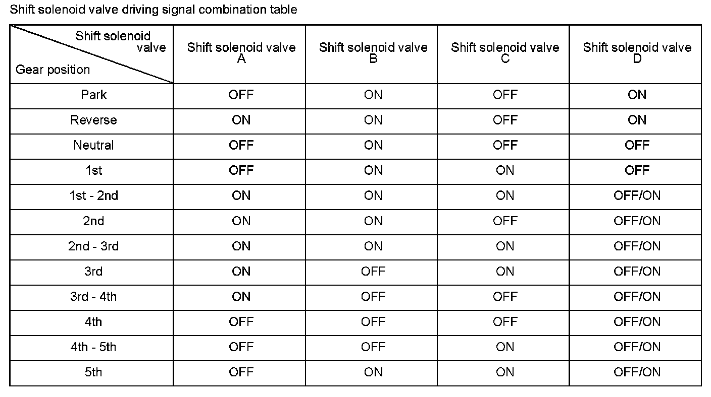

Advanced Diagnostics
DTC P0762: Shift Solenoid Valve C Stuck ON
General Description
Shift solenoid valve C is installed in the transmission housing. It is controlled by the ON/OFF signal from the powertrain control module (PCM), to apply modulated pressure to shift valve C. The signal from the PCM is output to apply clutch pressure control pressure to the proper gear change clutch according to the gear change schedule. When the signal to shift solenoid valve C from the PCM is ON, and modulated pressure is discharged, shift valve C is inactive. When the signal to shift solenoid valve C from the PCM is OFF, and modulated pressure is applied to shift valve C, it operates against the shift valve C spring. The PCM monitors the input shaft (mainshaft) speed and the output shaft (countershaft) speed at the gear change determined by the shift schedule. When an improper gear ratio is output compared to the predetermined gear change mode, a shift solenoid valve C ON failure is detected and a DTC is stored.
Monitor Execution, Sequence, Duration, DTC Type, OBD Status
Enable Conditions
Malfunction Threshold
The transmission is held in 3rd gear against the 3rd -> 4th gear upshift command for as long as 20 seconds, without records that the gear change time was short when the 2nd -> 3rd gear upshift were commanded.
Driving Pattern
Start the engine, and accelerate the vehicle until the transmission shifts into 5th gear in the D position.
- Drive the vehicle in this manner only if the traffic regulations and ambient conditions allow.
Diagnosis Details
Conditions for illuminating the MIL
When a malfunction is detected during the first drive cycle, a Temporary DTC is stored in the PCM memory. If the malfunction recurs during the next (second) drive cycle, the MIL comes on and the DTC and the freeze frame data are stored.
Conditions for clearing the MIL
The MIL will be cleared if the malfunction does not recur during three consecutive trips in which the diagnostic runs.
The MIL, the DTC, the Temporary DTC, and the freeze frame data can be cleared by using the scan tool Clear command or by disconnecting the battery.